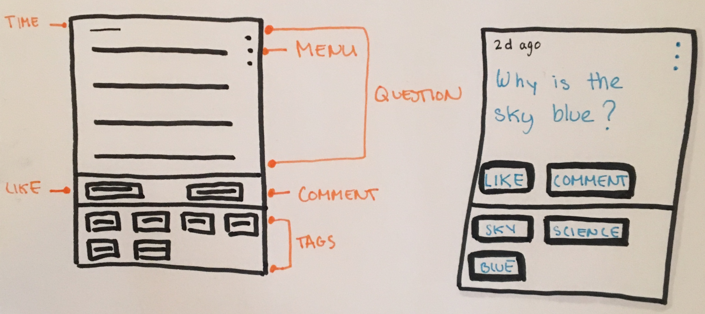
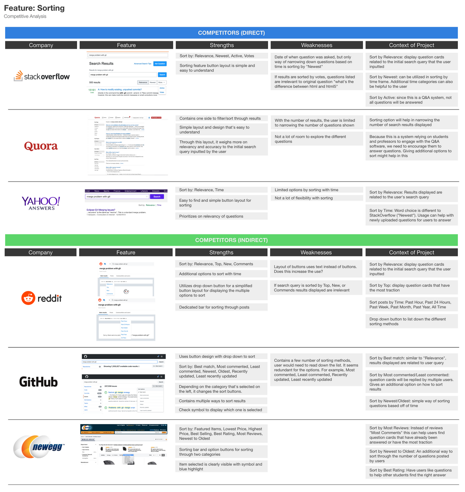
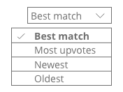
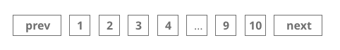
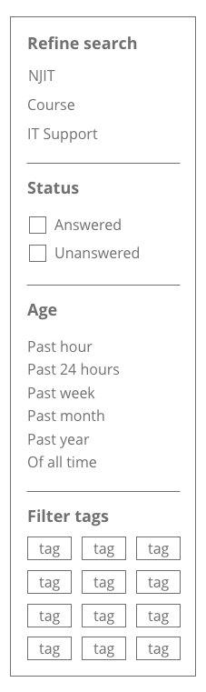

1 Aligning with Client’s Goals
User Flow
As simple as it looks, we realized there were a number of scenarios that can occur when communicating with the chatbot.
Understanding Our Users
For our first meeting, we focused on the conversation aspect of the chatbot.We knew to design this application for students, but how will they use it and what issues might they come across?
Together, we came up with dialogue based off of the use cases between the user and the chatbot.
User Scenarios
- Wants to ask a question to the chatbot
- Wants to answer a question that has been asked by another user
- Explores command feature
- Comes across an error
Since the user was communicating with the bot, we kept consideration of the bot's responses. Make it a simple conversation, that wasn't too complex for the user to understand.
Later on in the project, I found that this exercise with the team was a helpful way of stepping into the user's shoes and understanding their point of view.
Planning out the Sitemap
The project manager already had an idea of what web pages to include. However, the issue was how to transition each page to one another. Below is the final sitemap we constructed with LucidChart that would be passed on to the developers.

Divide and Conquer
Now we understood what pages to include, our professor wanted us to design the wireframes of the pages. For my part, I was given the task to design the layout of the search results page.
Every meeting consisted of going over each other's pages and brainstorming the core functionalities that would be needed for our users. Since we met online, we used InVision Freehand.
Designing the Search Results Page
I first started with planning out the question card. Anytime a user asks a question to the bot, it will appear in card form.
Card Features
With the card layout planned, next was figuring out what exactly our users needed for the search results page.
If the page is overloaded with questions, the user will have a hard time sorting through which question card is relevant. How might we fix that?
In this case, I decided to go in-depth on other Q & A sites to see how they organized their questions and prevented this information overload.
Preventing Information Overload
I looked at three direct competitors which focus specifically on managing questions and answers. These included: StackOverflow, Quora, and Yahoo Answers. I also decided to take a look at one indirect competitor Reddit, since it was a forum based environment that encourages users to interact with one another.
Medium Search Query: "Why is the sky blue?"
By analyzing the page you can see:
- The page organizes data by relevance, followed by most answers
- Questions can be narrowed down by filtering by market, category, time
- It also has a "sort by" feature: relevance, time
- Includes a text box to ask a question if you're not satisfied with the results
- Utilizes pagination
I had a better understanding of how their search results page worked. However, how did other sites accomplish this? I then looked at other Q&A sites such as Stack Overflow and Yahoo Answers with the same query.
Again, Quora had a similar results page to Quora, but includes a bit more functionality.
However, when it came to Stack Overflow it was different from what I expected. I changed the search query to "What's the difference between fork and clone?" since the site focused on programming questions.
I realized that even though this site includes different components compared to the other two, it was because their target audience was different. Although the three sites had some similar functionalities such as:
- Question layout
- Sort by time
- Results displayed based on relevance
- View additional questions
Filtering I noticed, varied between each website. That's when I knew I needed to think specifically about our users.
As for the other features, I decided to compare how each one organized the data.
In the end, these were the final functions I implemented to the search results page.
Results Displayed by Relevance
Displaying the questions by relevance should be a priority. If we want users to trust and consistently come back and use our Q & A system, we need a search engine that can be re-used.
Sorting Method
Organize results based on relevance, the number of upvotes, newest, and oldest questions asked.
Pagination
Keep track of what page the user is on.
Filter Sidebar
Help users narrow down the number of results. Refine search by topic, display questions that are either answered or unanswered, narrow the time further, and the option to enable tags that are relevant.
This was the layout of the wireframe utilizing all features.

With planning a low-fidelity wireframe, it made it way faster when creating the final prototype.


Once I finished the layout of the webpage for desktops, I then designed for mobile.


Outcome
Through the method of dividing and conquering, at the time it seemed like a good idea. After compiling our work together, we created a user flow diagram made with Lucidchart. With this project finished, our professor (Project Manager) passed it on to the student developers.
Lessons Learned
- Feedback frequently, make sure on same page